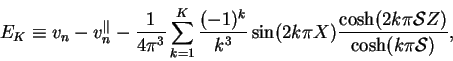
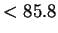
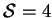

Though the solutions (7.22), (7.25) and (7.28) are exact, the ratios of hyperbolic functions appearing in the terms of the infinite series impose a limit on the accuracy of a numerical evaluation. The absolute value of the ratio is bounded by unity but the magnitude of the numerator and a fortiori the denominator increase rapidly, so that their values will cause an overflow error if evaluated by a machine with finite floating point arithmetic.
The problem is compounded by the
relatively slow convergence of the series. By applying basic
inequalities to the terms and using the well-known relation between
series and improper integrals
(Ramanujan & Thomas 1970, p. 110), the truncation
error for  using the series (7.25),
using the series (7.25),
|  | (7.32) |
For example, the ANSI C library function double cosh(double x) is only guaranteed not to overflow for x (Kernighan & Ritchie 1988, p. 258). For a duct with , this would limit the number of calculable terms of (7.25) to six, so that, by equation (7.33), the relative error may be as high as 1.4%.
This less than satisfactory situation can be remedied by replacing the
ratio of hyperbolic cosines by its asymptotic expansion for
large values of the argument in the denominator:
To overcome the nonuniformity, the exact correction can be added. This
gives the identity: